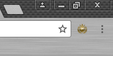
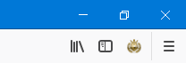

Please select your browser

Chrome

Firefox
Opera
Mobile
Chrome
Install the extension.
 Pokkén Tier List Maker
Pokkén Tier List Maker
The extension icon should appear in your Chrome menu.

Firefox
Install the add-on.
Pokkén Tier List Maker
The add-on icon should appear in your Firefox toolbar.
Opera
Mobile
%7B%2F%2F%20%3D%3DUserScript%3D%3D%2F%2F%20%40name%20%20%20%20%20%20%20%20%20Extra%20Tier%20Lists%2F%2F%20%40namespace%20%20%20%20https%3A%2F%2Fgithub.com%2Fkaloncpu57%2F%2F%20%40version%20%20%20%20%20%200.5.3%2F%2F%20%40description%20%20Add%20extra%20games%20to%20tier%20list%20maker%2F%2F%20%40updateURL%20%20%20%20https%3A%2F%2Fkaloncpu57.github.io%2Fpokemon%2Fpokken-discord%2Ftiers.user.js%2F%2F%20%40author%20%20%20%20%20%20%20kaloncpu57%2F%2F%20%40match%20%20%20%20%20%20%20%20http%3A%2F%2Fjcal.zone%2Fsmash-apps%2Ftier%2F%2F%2F%20%40grant%20%20%20%20%20%20%20%20none%2F%2F%20%3D%3D%2FUserScript%3D%3Dfunction%20gameChanger(game)%20%7BcurrentGameChars%20%3D%20%5B%5D%3BcurrentGameChars%20%3D%20game%3BcurrentGame%20%3D%20game%5B0%5D%3Bvar%20ext%20%3D%20%22.png%22%3Bif%20(currentGame%20%3D%3D%20%22%24race%22)%20%7Bext%20%3D%20%22.svg%22%3B%7D%24(%22.character%22).each(function%20()%20%7B%24(this).remove()%3B%7D)%3Bfor%20(var%20i%20%3D%201%3B%20i%20%3C%20game.length%3B%20i%2B%2B)%20%7B%24(%22%23char%20div%3Alast-child%22).after(singleChar)%3B%24(%22%23char%20div%3Alast-child%22).css(%7B%22background-image%22%3A%20%22url(https%3A%2F%2Fkaloncpu57.github.io%2Fpokemon%2Fpokken-discord%2Fcharacters%2F%22%20%2B%20game%5Bi%5D%20%2B%20(currentGame%20%3D%3D%20%22Pokk%C3%A9n%22%20%3F%20%22-dx%22%20%3A%20%22%22)%20%2B%20ext%2C%20%22background-size%22%3A%20%22100%25%20100%25%22%7D)%3B%24(%22%23char%20div%3Alast-child%22).attr(%22id%22%2C%20i)%3B%7D%24(%22h1%20span%22).text(currentGame)%3BupdateTiers()%3B%7Dvar%20race%20%3D%20%5B%22%24race%22%2C%20%22dolphin%22%2C%20%22koala%22%2C%20%22bear%22%2C%20%22crab%22%2C%20%22penguin%22%2C%20%22beetle%22%2C%20%22panda%22%2C%20%22unicorn%22%5D%3Bvar%20pokken%20%3D%20%5B%22Pokk%C3%A9n%22%2C%20%22aegislash%22%2C%20%22blastoise%22%2C%20%22darkrai%22%2C%20%22blaziken%22%2C%20%22pikachu%22%2C%20%22lucario%22%2C%20%22gardevoir%22%2C%20%22pikachu-libre%22%2C%20%22scizor%22%2C%20%22croagunk%22%2C%20%22sceptile%22%2C%20%22gengar%22%2C%20%22decidueye%22%2C%20%22machamp%22%2C%20%22braixen%22%2C%20%22empoleon%22%2C%20%22mewtwo%22%2C%20%22chandelure%22%2C%20%22suicune%22%2C%20%22weavile%22%2C%20%22charizard%22%2C%20%22garchomp%22%2C%20%22shadow-mewtwo%22%2C%20%22mew%22%2C%20%22celebi%22%2C%20%22mega-rayquaza%22%2C%20%22mimikyu%22%2C%20%22litten%22%2C%20%22popplio%22%2C%20%22emolga%22%2C%20%22fennekin%22%2C%20%22snivy%22%2C%20%22lapras%22%2C%20%22frogadier%22%2C%20%22eevee%22%2C%20%22mismagius%22%2C%20%22ninetales%22%2C%20%22jirachi%22%2C%20%22whimsicott%22%2C%20%22croagunk-support%22%2C%20%22sylveon%22%2C%20%22farfetchd%22%2C%20%22electrode%22%2C%20%22pachirisu%22%2C%20%22magikarp%22%2C%20%22cubone%22%2C%20%22diglett%22%2C%20%22magneton%22%2C%20%22quagsire%22%2C%20%22espeon%22%2C%20%22umbreon%22%2C%20%22rotom%22%2C%20%22togekiss%22%2C%20%22dragonite%22%2C%20%22victini%22%2C%20%22reshiram%22%2C%20%22cresselia%22%2C%20%22yveltal%22%2C%20%22latios%22%5D%3B%24(%22%23switchButtons%22).append(%24(%22%3Chr%2F%3E%22))%3Bvar%20raceBtn%20%3D%20%24(%22%3Cbutton%20id%3D'switchRace'%3E%24race%3C%2Fbutton%3E%22).click(function%20()%20%7BgameChanger(race)%3B%7D)%3B%24(%22%23switchButtons%22).append(raceBtn)%3B%24(%22%23switchButtons%20button%3Alast-child%22).after(%22%20%22)%3Bvar%20pokkenBtn%20%3D%20%24(%22%3Cbutton%20id%3D'switchPokken'%3EPokk%26%23233%3Bn%20Tournament%3C%2Fbutton%3E%22).click(function%20()%20%7BgameChanger(pokken)%3B%7D)%3B%24(%22%23switchButtons%22).append(pokkenBtn)%3B%24(window).unload(function%20()%20%7Bvar%20customGames%20%3D%20%5B%22%24race%22%2C%20%22Pokk%C3%A9n%22%5D%3Bvar%20stored%20%3D%20localStorage.getItem(%22TierListMakerCode%22).split(%22%3D%3D%22)%5B0%5D%3Bif%20(customGames.indexOf(stored)%20!%3D%20-1)%20%7BlocalStorage.removeItem(%22TierListMakerCode%22)%3B%7D%7D)%7D)()){kind=link}
Go to the Tier List Maker
When you are on the Tier List Maker page, click the link you have bookmarked to run the extension. You must click the bookmark each time you visit or refresh the Tier List Maker page.